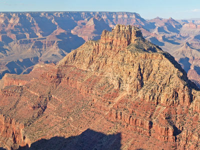
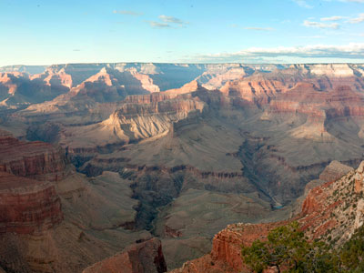
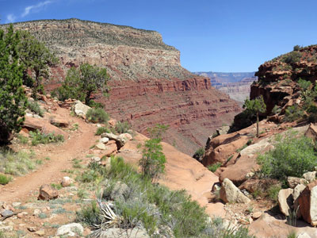
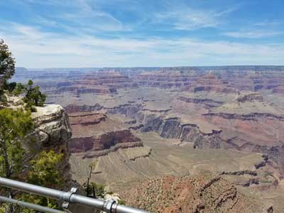
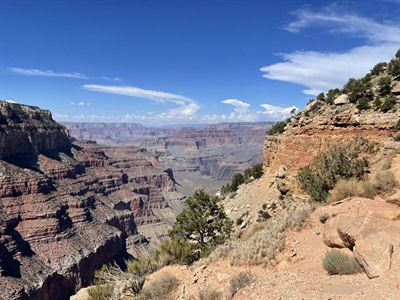
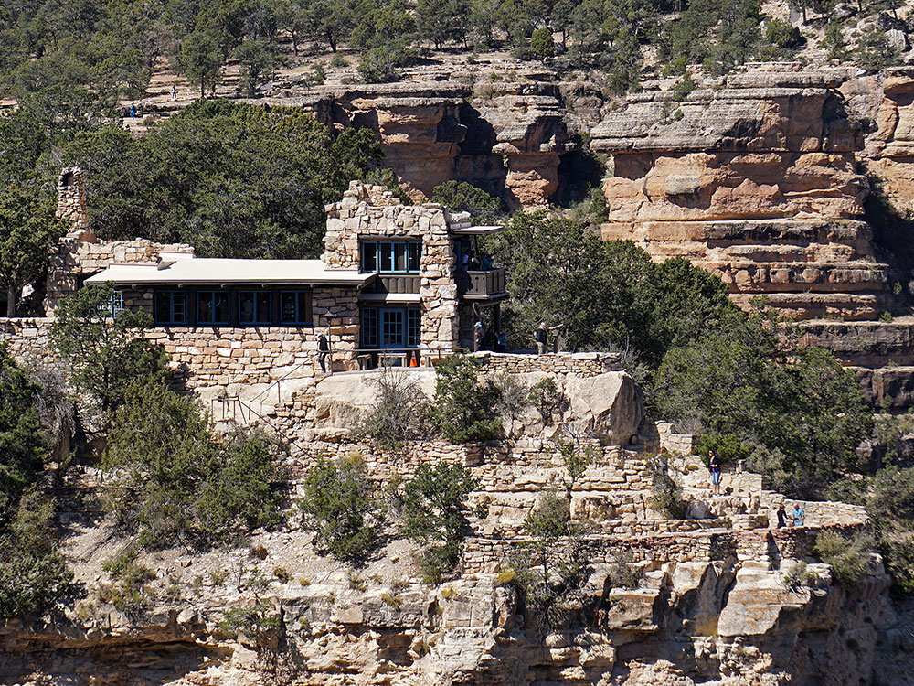

Vast canyon landscape featuring layered red and tan rock formations, dramatic cliff-lined overlooks, and panoramic desert views stretching for miles.
General Information
Motorcycle: $30 (7-day pass)
Individual (walk-in or bicycle): $20 (7-day pass)
Children age 15 and under: Free
How to Get There
From Tusayan (7 mi): Travel north on AZ-64 through the South Entrance of Grand Canyon National Park and continue approximately 7 miles to Grand Canyon Village and the primary South Rim viewpoints.
Overview
The South Rim is the Grand Canyon’s most popular and accessible area, open year-round and home to Grand Canyon Village, with iconic viewpoints, historic lodges, trails and free shuttle buses. A 35-mile driving route follows the rim: the 8-mile Hermit Road to Hermits Rest, with overlooks such as Mohave Point, Hopi Point and the Powell Memorial (shuttle only from March to December), and the 25-mile Desert View Drive to Desert View, open to private vehicles. The paved Rim Trail runs about eight miles west of Pipe Creek Vista, and Mather Point is the first view for many visitors.
The Grand Canyon Village Historic District has landmark buildings designed to blend with the landscape in National Park Service Rustic style, many by architect Mary Colter: El Tovar Hotel (1905), Hopi House, Kolb Studio, Bright Angel Lodge, Lookout Studio, the Grand Canyon Railway Depot and the 70-foot Desert View Watchtower. Buckey O’Neill Cabin, from the 1890s, is the oldest surviving structure on the rim. Helicopter and airplane tours depart from Las Vegas, Phoenix and Grand Canyon Airport, and flights cannot fly within 1,500 feet of the rim in the park.
At the bottom of the canyon, Phantom Ranch is a rustic lodge with cabins and dormitories reached only by trail, mule or river, and it is among the hardest places to book in the country. Reservations open 15 months ahead by monthly lottery. The Bright Angel and South Kaibab trails lead to it.
This article uses material from the Wikipedia articles "Grand Canyon National Park", and "Phantom Ranch"which are released under the Creative Commons Attribution-Share-Alike License 3.0
Featured South Rim Trails
Trail descending 4380 feet to the Colorado River is the most common method used to access Phantom Ranch by hikers and mules
Trail descending 4,380 feet to the Colorado River is the most common method used to access Phantom Ranch by hikers and mules

Jeff P from Berkeley, CA, USA, CC BY 2.0, via Wikimedia Commons; Image Size Adjusted
.jpg){kind=link}
A scenic paved route following the canyon rim with numerous overlooks that provide expansive views of layered rock formations and the distant river.
A historic multi-story stone tower designed in the style of ancient Puebloan architecture offering elevated panoramic views of the canyon and surrounding desert landscape.
A steep and rugged backcountry route descending along narrow, exposed switchbacks with dramatic vistas and remnants of historic mining activity.

Jeff P from Berkeley, CA, USA, CC BY 2.0, via Wikimedia Commons; Image Size Adjusted
A scenic rimside road lined with dramatic overlooks offering expansive canyon views and access to quieter viewpoints along a paved route.

Jeff P from Berkeley, CA, USA, CC BY 2.0, via Wikimedia Commons; Image Size Adjusted
17.5 mi round trip, 5,059 ft elevation gain
A steep and demanding backcountry trail descending along rugged terrain with dramatic elevation changes and access to remote canyon scenery.

Historic stone shelter and scenic overlook marking the end of a rimside road, offering sweeping canyon views and access to a rugged backcountry trail.
Rim Trail
A mostly paved scenic pathway following the canyon rim with minimal elevation change and continuous panoramic viewpoints.
14.3 mi round trip, 4,872 ft elevation gain
Follows a ridge out to Skeleton Point allowing for 360-degree views of the canyon

Jeff P from Berkeley, CA, USA, CC BY 2.0, via Wikimedia Commons; Image Size Adjusted
Jeff P from Berkeley, CA, USA, CC BY 2.0, via Wikimedia Commons; Image Size Adjusted
Discover the best viewpoints along the South Rim of the Grand Canyon, offering breathtaking vistas of the Colorado River and surrounding landscapes.

Ooh Aah Point, Grand Canyon South Rim
Imranchwilder, CC BY-SA 4.0, via Wikimedia Commons

Ooh Aah Point
Short but steep trail leading below the rim to a scenic outcrop with sweeping canyon views from an elevated ridge.
Rim Trail, Grand Canyon South Rim
Grand Canyon National Park, CC BY 2.0, via Wikimedia Commons
.jpg){kind=link}
Rim Trail
A mostly paved scenic pathway following the canyon rim with minimal elevation change and continuous panoramic viewpoints.
